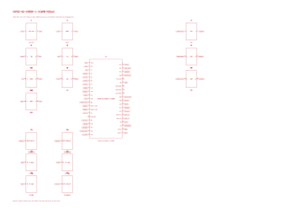

 Sponsor deck · November 2026
Sponsor deck · November 2026
FaleraOS
An open conference badge, and the operating system that runs it.
ESP32-S3with a 2.8″ touch screen
₹4,172in parts per badge ($44)
100%open source
By Elixpo · Built in India, in the open

OSHWA certifiedopen source hardware
Open source, in publicgithub.com/elixpo/falera
Registered MSME, IndiaUDYAM-WB-07-0152337